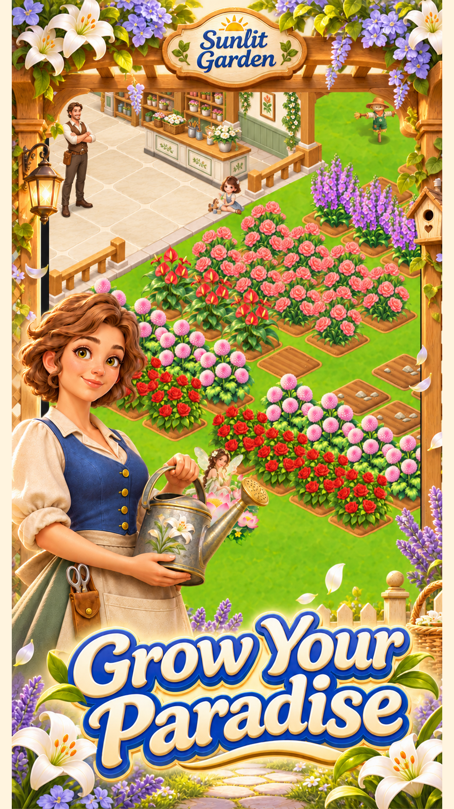
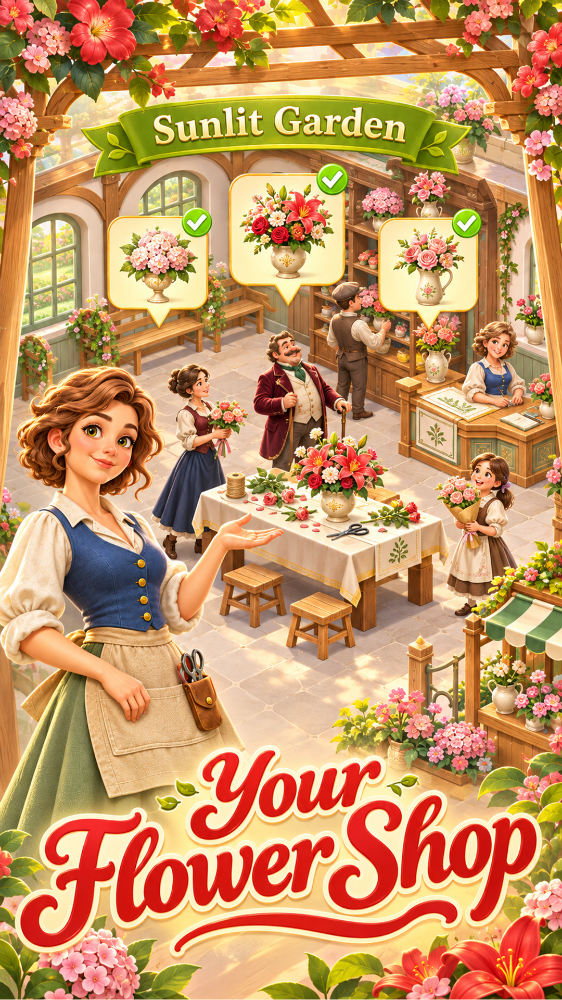
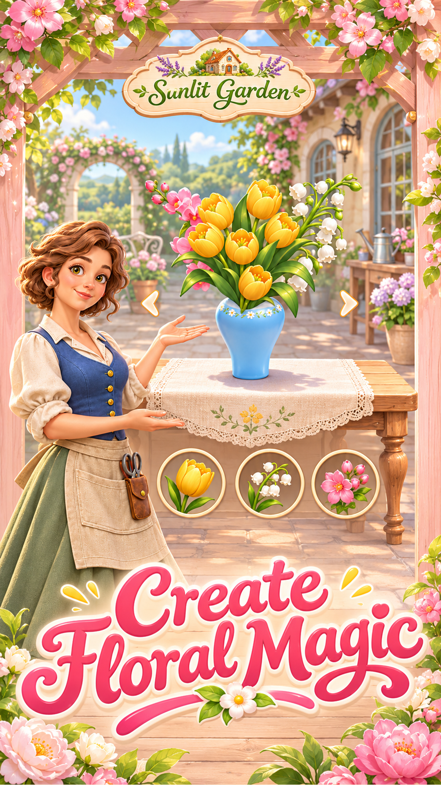

Fill your garden with color
Plant and water your flowers, harvest their blooms and discover varieties to add to your collection.
Plant a little joy in Sunlit Garden. Grow beautiful flowers, craft charming arrangements and bring your own garden story to life.
Explore the garden ↓For players aged 13 and over.
Contains ads and in-app purchases.

From your first flower bed to a flourishing collection, enjoy the simple pleasure of watching your garden come alive. Discover new flowers, put your harvest to use and create a place that feels like your own.
Plant and water your flowers, harvest their blooms and discover varieties to add to your collection.
Pair flowers with beautiful vases. Explore combinations of main, supporting and accent flowers to create your floral collection.
Fulfill flower orders, meet customers and explore garden life with friends and your guild.
Step into a sunny world of welcoming shops, charming characters and colorful floral creations.


Promotional artwork. In-game presentation may vary.
A handful of seeds. A splash of color. A garden waiting to bloom.
Get in touch